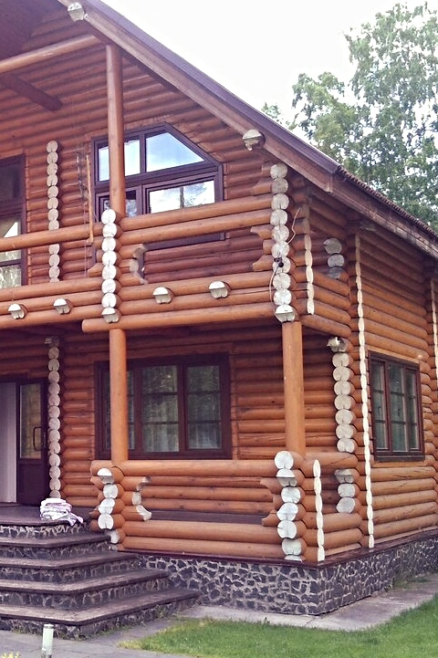
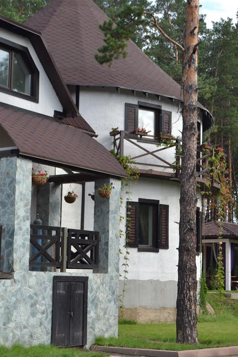
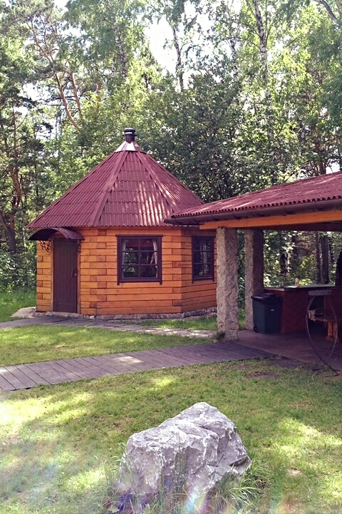

Загородный дом ВЕРХОТОМКА предоставляет своим гостям качественный загородный отдых в поистине живописном месте, где можно отдохнуть дружной компанией или провести время со своей семьей, а также организовать корпоративный праздник с барбекю, бассейном и веселым отдыхом на свежем воздухе.
Деревянные коттеджи создают ощущение уюта и комфорта, ведь они изготовлены из экологичных деревянных срубов, оборудованных всем необходимым для хорошего отдыха.
Небольшаяя удаленность от г.Кемерово даёт возможность отлично отдохнуть недалеко от дома и воспользоваться всеми услугами загородного дома ВЕРХОТОМКА: просторной летней верандой с освещением, бассейном и сауной.
У нас вы сможете получить насыщенный отдых за городом и в полной мере насладиться теми преимуществами, который дает коттеджный отдых.
Так же вы можете воспользоваться гостинично-банкетный корпусом для проведения незабываемых праздников, свадеб и корпоративов.
коттедж на верхотомке